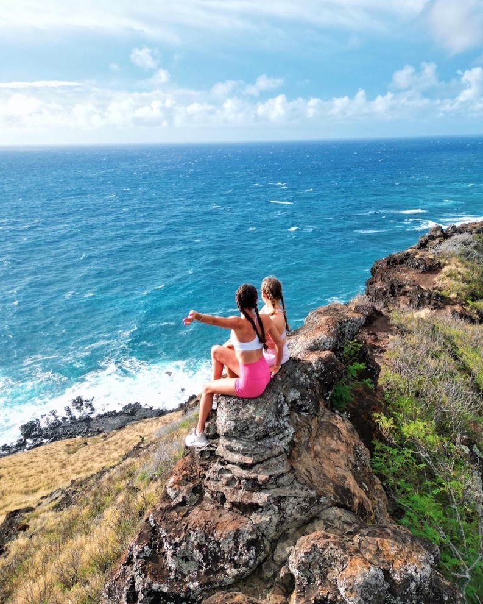
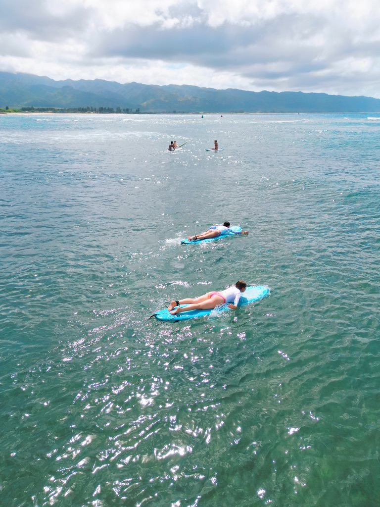
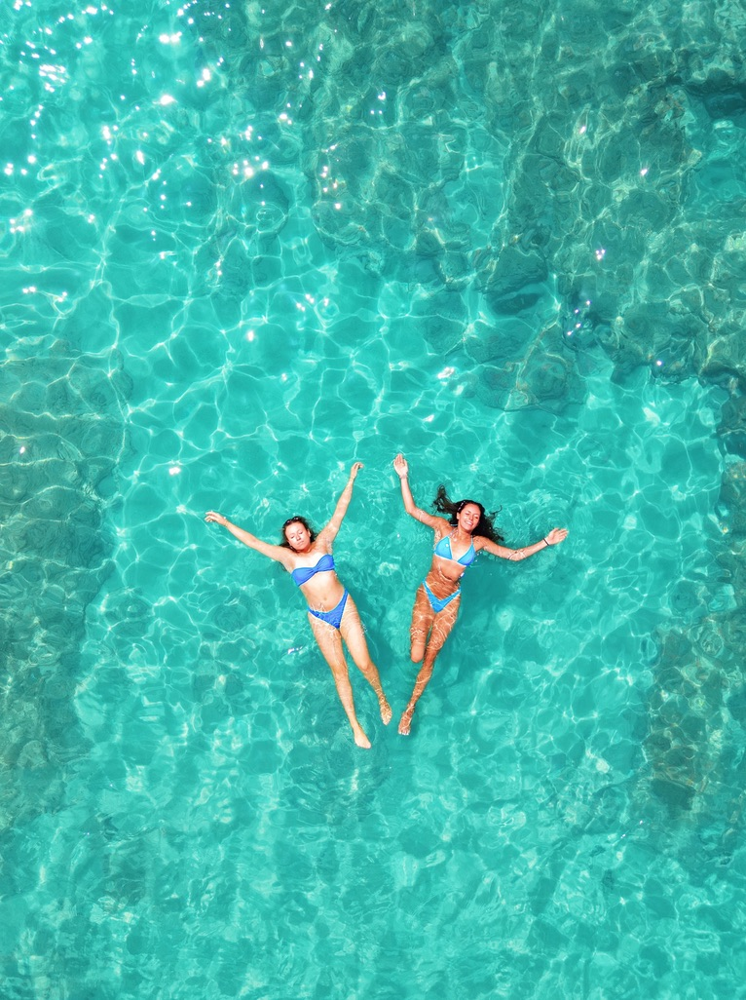

Playing in the Sun

Aloha Sun, Sand, and Surf #Ohau
A guide to having fun in the sun in Oahu, HI
I just recently visited Oahu, Hawaii and it was one of my favorite places that I've visited. I did a lot of research prior to my trip to ensure I knew all the best food spots, excursions, activities, and hiking spots on the island. Oahu is the perfect vacation spot and now that I have been, here's all the spots I would recommend checking out if you are planning on visiting this beautiful island. #AlohaOahu
Adventure Awaits
Oahu is known for having stellar hiking spots. I found this to be very true. Each hike I did seemed to be better than the last. A few of the hikes I recommend would be Diamond Head trail, any of the pillbox hikes in North Shore, and Waimea. All of the spots are so beautiful and the hikes are definitely doable. I suggest going in the morning to avoid the heat. Hikes are one of the best ways to see the island.

I will never get over this view! #Adventure
In the mood for some more adventure, go check out one of the many waterfalls hikes Oahu has to offer. I went to multiple different waterfalls on my trip and none of them disappointed me. It was truly a magical experience getting to swim in the waterfall. The sights are amazing, it's a must see for sure. My personal favorite Waterfall was Moana Waterfall. I suggest checking this one out. However if you don't wear white, the hike to the falls is very muddy. #ChasingWaterfalls
If you are looking for a cool place to explore but you don’t feel like a hike is the best fit for you, go check out the magical mermaid moon pool. These underwater caves are located in the Ko'Olina area. This spot is definitely picture worthy. These caves fill as the tide comes in so be sure to go early and be sure to wear shoes, this is a popular place for sea urchins to hide. Overall this spot is a great way to the island's natural beauty without having to hike anywhere. #ExploreOahu
Seeking Surf
What better to do on a sunny day in Oahu than go surfing! If you are anything like me you may be thinking I could never get up surfing. Well I tried surfing for the first time on this trip and ended up getting the hang of it super fast. The best spot I found for beginners was in the North Shore of Oahu. There are tons of surf shops with instructors that will take you out and show you the ropes. This was personally one of my favorite "excursions' ' that you can do in Oahu. It gives you less of a tourist excursion and more of a true local experience. Aside from the actually surfing part, just being out in the water you get breathtaking views and you see tons of wildlife. I was lucky enough to see a few sea turtles! Also the surf shops in the North Shore have such cute swimsuits and jewelry! I highly suggest checking our the shops if you dont think surfing is for you.
Now I want to be a surfer girl! #Surf #NorthShore
Paradise and Pineapples
Did you know that Dole Pineapple is based in Oahu! You can actually go and visit their plantation on the island. This was such a unique experience. I was able to see where they grow all the pineapples as well as do plenty of other activities that they offered. They had a maze, gift shop, and plenty of stations where you could get fresh dole whip! This spot is very tourist friendly if that is something you are looking for. It definitely gets busy towards the afternoon so I recommend going earlier in the day. And did I mention, its free entry! #DolePlantation
Going along with the fresh fruit theme, Oahu has hands down the best acai bowls I have ever had. All the fruit is so fresh and tropical tasting! I got an acai bowl almost everyday on my trip. Out of all the places I went my favorite spot has to be the Sunrise Shack This acai bowl spot is located in the North Shore. They had so many different types of acai bowls, and you could even get your bowl inside of a pineapple! This place is also just so cute. It's located right across from the beach and it has a view of water on one side and mountains on the other. It’s such a cool spot, if you love acai like me you will love the Sunrise Shack! #Acai

The sun always shines at the sunrise shack. #Sunshine